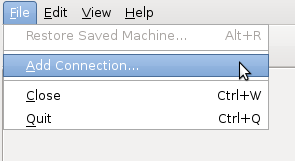

基於 KVM 與 libvirt 的虛擬化叢集系統－Debian 篇

簡介
自由軟體鑄造場 (OSSF) 在台灣推廣自由軟體，長久以來持續提供「應用典範 (Web-hosting)」服務，供台灣知名或具有發展潛力的自由軟體相關組織申請與使用。隨著虛擬化技術的進步，應用典範也逐漸以 KVM 技術取代早期的 Xen 環境。在轉換的過程中，自由軟體鑄造場投入研究，致力於虛擬化的研究與運用，最終採用由 KVM 及 Red Hat 研發的 libvirt 與 virt-manager 管理模組，有效管理虛擬叢集系統。
前置作業
架設環境
- 作業主機- 一個或數個虛擬主機：每個主機皆要能支援 CPU 虛擬化技術，如 AMD 的 AMD-V 或是 Intel 的 VT-x。
- 一個或數個儲存伺服器：儲存空間愈大愈好，用以儲存資料，並建議實作 RAID 機制，以降低因硬碟損壞而造成資料遺失的風險。
- 遠端主控台：備留一台主機供安裝 virt-manager 管理模組，且該主機需支援桌面環境。
- 作業系統
- Debian Squeeze amd64 版本。
模擬環境的網路架構圖：
▲ 圖1
檢查 CPU 是否支援虛擬化技術
在 Debian 等 Linux 作業系統中，可於 /proc/cpuinfo 檢查 CPU 是否支援 vmx (Intel) 或是 svm (AMD) 虛擬化技術。請讀者進入 Debian 終端機後，輸入以下指令
egrep -c '(vmx|svm)' /proc/cpuinfo
若該指令輸出為 0，則代表不支援；反之，若為 1 以上，則代表主機支援 CPU 虛擬化技術。指令的結果也會顯示出主機上有多少 CPU 支援此技術。如果輸出為 0 ，讀者也別灰心，可以先進入主機的 BIOS 選項，檢查虛擬化技術的支援是否未開啟。
如果不會使用終端機，也可以依照主機 CPU 的型號來推斷是否具備虛擬技術，但這方法不一定精準。
如何於 BIOS 中啓用 CPU 虛擬化支援
▲ 圖2
進入主機 BIOS 選項後，如果 CPU 有支援，則可以在裡面找到啟動虛擬化技術的選項，如圖中白色文字處。
此外，有少數情況是 CPU 支援虛擬化技術，但主機板卻無法配合，如部分 VAIO 筆記型電腦。此時需要其他方式開啟，有興趣的讀者可自行上網查詢。
NFS 設定
在儲存伺服器上，可以使用最容易安裝與設定的 NFS，以供虛擬主機進行遠端存取。在安裝 Debian 作業系統時，除了留給作業系統的空間外，建議讀者預留額外存放虛擬機器映像檔的空間，或者分割出一個獨立的磁區。
為了方便管理使用者帳號，建議讀者安裝 NIS/YP 來統一管理。
1. 安裝 nfs-kernel-server，指令如下，
aptitude install nfs-kernel-server
2. 修改 /etc/exports 並加入分享的目錄。範例如下，讀者可依現行環境作變更，
/srv/nfs 192.168.1.0/24(rw,sync,no_subtree_check,no_root_squash)
3. 將預留給 NFS 掛載的磁區（如果有的話）掛載在 /srv/nfs 上面，並在 /srv/nfs 中建立一個名為 storage 的目錄。
4. 最後重新啟動 NFS，
/etc/init.d/nfs-kernel-server restart
若讀者需要作業系統的 ISO 映像檔，可以將各 ISO 映像檔放置於 /srv/nfs/storage，之後安裝虛擬機器的作業系統時可以直接從該目錄存取。
虛擬主機的安裝與設定
1. 安裝 openssh-server，aptitude install openssh-server
2. 安裝 libvirt-bin，
aptitude install libvirt-bin
3. 將使用者帳號加入 libvirt 群組以方便遠端控制，下列指令的 [username] 請變更為使用者的帳號。
gpasswd -a [username] libvirt
4. 設定 /etc/networking/interfaces，將該目錄下的 eth0 設定全部移除，並使用下列的內容。要特別注意的是，讀者需自行判斷網路卡的代號，本範例是 br0。
auto br0
iface br0 inet static
address 192.168.1.1 # 設定靜態 IP
netmask 255.255.255.0 6 # 設定 Netmask
gateway 192.168.1.254 # 設定 Gateway
bridge_ports eth0
bridge_stp on
bridge_maxwait 0
auto br0
iface br0 inet dhcp
bridge_ports eth0
bridge_stp on
bridge_maxwait 0
最後重新啓動電腦即可。
遠端控制主機安裝 virt-manager
1. 安裝 virt-manager，aptitude install virt-manager ssh-askpass-gnome
2. 使用 ssh-keygen，依其步驟製作公私鑰方便登入。
3. 將 ~/.ssh/id_rsa.pub 的內容複製到每一台虛擬主機的 ~/.ssh/authorized_hosts 中。若虛擬主機沒有該目錄或檔案，則請讀者自行建立，但該檔案的權限必須設定為 600。
4. 在 virt-manager（虛擬機器管理員）中新增剛安裝好的虛擬主機，
1. File → Add Connection，

▲ 圖3
2. Hypervisor 請選擇 QEMU/KVM；Connection 請選擇 Remote tunnel over SSH；Hostname 請輸入「使用者名稱@Address」，
▲ 圖4
3. 最後按下 Connect，即可建立完成。
5. 設定儲存池：
1. 點擊滑鼠右鍵 → Details，
{kind=link}
▲ 圖5
2. 點選 Storage 標籤，
▲ 圖6
3. 點選左下角 [+] 圖示。
4. 輸入儲存池名稱，如果多台電腦共用一個儲存池，命名務必相同。
▲ 圖7
5. 依照之前的 IP 與 NFS 儲存路徑設定填寫儲存裝置的位置與名稱，最後按下 Finish。

▲ 圖8
建立虛擬主機
1. 對 host 點擊滑鼠右鍵 → New，▲ 圖9
2. 輸入虛擬機器的名稱，按下 Forward，
▲ 圖10
3. 選擇使用 ISO 映像檔。
1. 先按 Browse...。
▲ 圖11
2. 按下瀏覽，從先前建立的 storage pool 中選擇要安裝的作業系統映像檔。

▲ 圖12
3. 選擇要安裝的作業系統類型。
▲ 圖13
4. 按 Forward 繼續。
4. 設定分配虛擬機器使用的資源，再按 Forward 繼續。
▲ 圖14
5. 設定 Storage。
1. 點選 Select managed or other existing storage，之後點選 Browse...。
{kind=link}
▲ 圖15
2. 點選先前已建立的 storage pool，再點選 New Volume 以建立一個新的映像檔。
▲ 圖16
3. 設定映像檔名稱之後調整大小，點選 Finish（格式使用 raw）。
▲ 圖17
4. 選擇剛剛建立的 volume 並按下 Choose Volume。
▲ 圖18
5. 按 Forward 繼續。
▲ 圖19
6. 設定網路。
1. 點開 Advanced options，將原本使用 NAT 的設定改成 Specify shared device name。
▲ 圖20
2. 將下面的 Bridge name 設定成網路卡的代號，本範例為 br0。
3. 按下 Finish 建立虛擬主機。
7. 虛擬主機將會在建立完成後自動重新啟動。
▲ 圖21
結語
由於QEMU/KVM 允許使用者執行多種作業系統，而且不像 Xen 需額外授權來放寬使用限制。此外，透過 libvirt 的圖形化介面操作也相當直覺，是自由軟體架構下不錯的虛擬化解決方案。因此，自由軟體鑄造場的應用典範服務才會由現行所採用的 Xen 轉而導入並逐步轉換成 QEMU/KVM 為基礎的服務。自由軟體鑄造場竭誠歡迎有興趣的讀者與我們聯絡交流。
作者簡介
魏藥，本名魏銘廷，目前是大學四年級學生。目前在自由軟體鑄造場擔任技術支援工讀生，也是一隻阿宅。最近在 Debian、Ubuntu 與 LXDE 等社群活動，做各式各樣的事情。個人網站：https://m-wei.net/
You may be interested in the following articles:
- 基於 KVM 與 libvirt 的虛擬化叢集系統－儲存空間的配置 - 2011-12-08